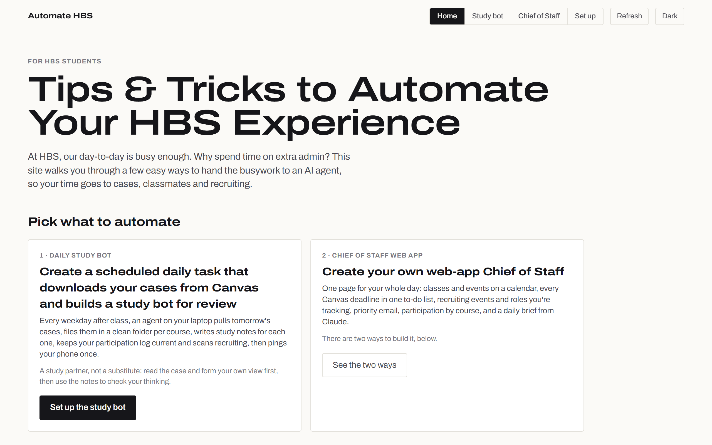
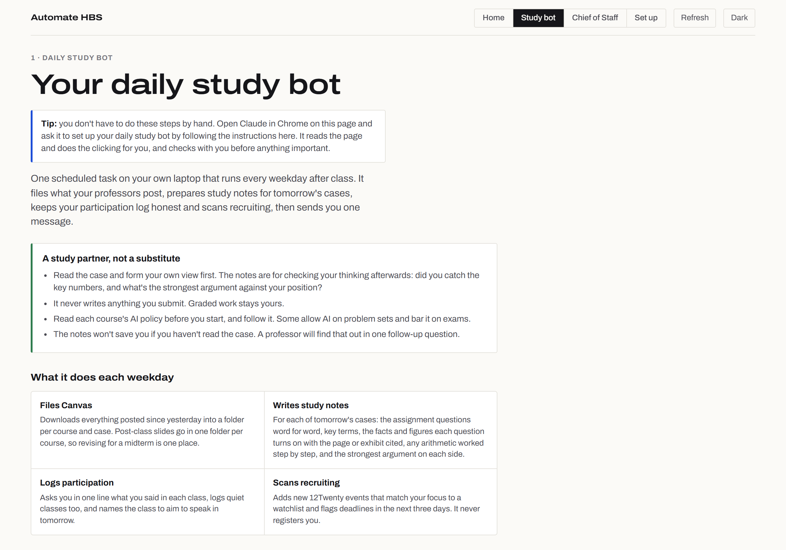
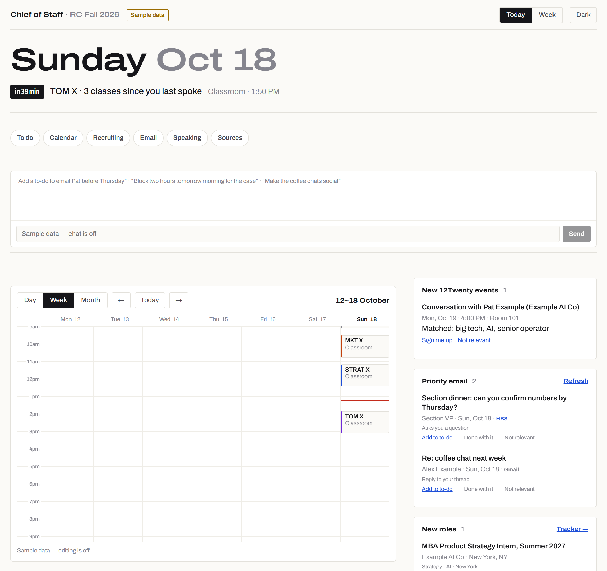
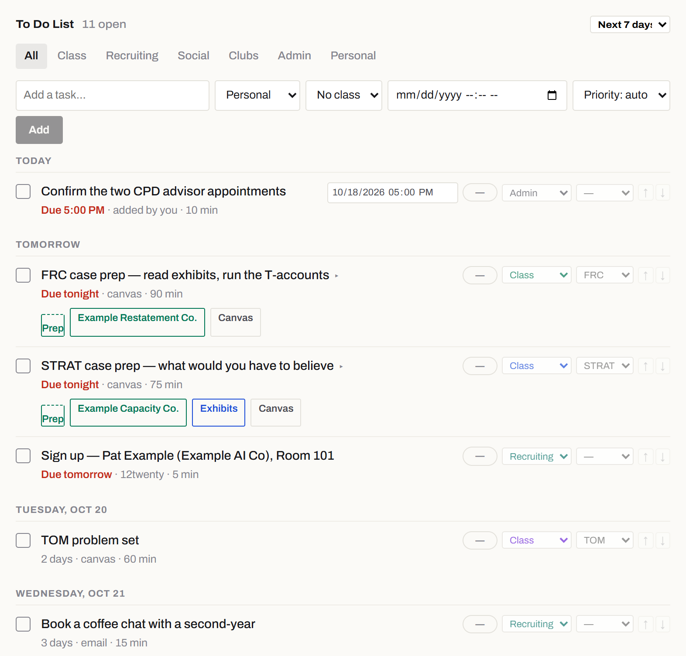

A project from my first year at Harvard Business School
I automated the admin of business school. Then I taught my classmates to.
Life gets busy at HBS. To make the most of my time, I automated as many of my tasks as possible, handing the small, recurring admin to AI agents: filing class materials, prepping for cases, tracking recruiting, triaging two inboxes.
Friends kept asking how, so I built a website that teaches them a few of the most helpful tasks, from a simple daily study run anyone can set up to the full Chief of Staff I use every day.
Why: the admin is spread across six systems
An HBS first year runs six courses with a case almost every day while recruiting for a summer internship. What you need to plan a single day lives in six places across school, personal life and recruiting. None of them talk to each other, and two sit behind university sign-on with no API a student can use.
School resources
Personal life
Recruiting & career
The website
Tips & tricks to automate your HBS experience
The site opens with a choice of two things to automate. Each comes with step-by-step instructions written for someone who has never used a terminal, and a tip for letting Claude in Chrome read the page and do the clicking.

The easy one
A daily study bot, set up in about 90 minutes
The low-hanging fruit: one scheduled task on your laptop that runs every weekday after class. It needs no website and no code, just a folder structure, a context file and a starter prompt the site gives you to copy.
- Files Canvas. Downloads what professors posted into a folder per course and case, with every post-class deck in one place for midterms.
- Writes study notes. For tomorrow's cases: the questions word for word, key figures with the exhibit cited, the arithmetic worked step by step, and the strongest argument on each side.
- Logs participation. Asks in one line what you said in class, logs quiet classes too, and names where to speak tomorrow.
- Scans recruiting. Flags new 12Twenty events that match your focus. It never registers you.
It's framed as a study partner, not a substitute: read the case and form your own view first, then use the notes to check it. It never writes anything that gets submitted, and each course's AI policy comes first.

The full system
An AI Chief of Staff: one page that runs my day
Everything from the six systems in one page I check from my phone between classes, with an agent that handles the routine work and never does anything I can't undo without my say-so. Below is the template version, running on made-up sample data.
View 1 · planning the day

- Tracking class participationWe're expected to participate as much as possible, but in many courses not every class, so others get a chance. Before each class it shows how many sessions since I last spoke there.
- An agent at the top“Add a to-do to email my CPD advisor before Thursday” or “block two hours tomorrow for the case”, and it does it.
- One calendarDay, week and month views merged from HBS Outlook and Google, color-coded by course.
- Recruiting eventsNew 12Twenty events matched to my targets, with one-tap sign-up that the laptop carries out.
- Priority email from both inboxesMail that wants a reply from HBS Outlook and Gmail, tagged by source, one tap to turn into a to-do.
View 2 · getting it done

- Every Canvas assignment in one to-do listGrouped by the day it's due, with a horizon so tonight's reading isn't buried under next month's.
- Cases pulled into each class to-doThe case, exhibit files, the Canvas page and my prep notes are attached right on the task, so tomorrow's prep is one click.
- School, recruiting and life in one list12Twenty sign-ups, coffee chats and admin sit beside class prep, each tagged so I can filter to one kind.
Also on the page
Two ways classmates can build it
Option 1 · about 15 minutes
No code, inside Claude
A page that runs on each student's own Claude account and reads their Google Calendar and Gmail, with Canvas and Outlook arriving as calendar feeds. The agent, to-do list, news and role tracker all work.
Option 2 · two to three hours
Build your own, guided in Claude Code
Copy a scrubbed public template and build the full console step by step: your own website, database, laptop worker and agent. A first coding project with a useful result.
How the Chief of Staff works
The hard constraint was that two sources only exist behind a signed-in browser. So the system is split in two: workers that do the reaching, and a website that only ever reads a database.
Sources
- CanvasREST API
- Google Calendar, GmailOAuth APIs
- HBS Outlooksigned-in browser only
- 12Twentysigned-in browser only
- Job boardspublic APIs
Cloud worker
- GitHub ActionsAPI sources, on a schedule, laptop or not
Laptop worker
- Node + Playwrightbrowser sources, plus approved actions
Database
- Neon Postgrestasks, events, email, roles, the action queue
Website
- Next.js on Vercelpassword-gated, reads only the database
- Claude agenttool use over the same data
Approvals travel the other way: I tap “Sign me up” on my phone, the website queues it, and the laptop worker, the only machine with a 12Twenty session, carries it out within a minute. University credentials never leave the laptop; the website holds nothing that could impersonate me.
Product decisions
Most of the work was deciding what the system should not do. Each of these came from something that went wrong first.
One scheduled run, not seven
My first version had seven daily automations, and I switched them all off because each one opened a new conversation every day. The fix was one run with one notification. Every new feature now has to fit inside it.
Nothing irreversible without a tap
The system registers me for an event only when I ask for that specific event, and a standing “just sign me up” never carries over. It never sends email: outreach notes are drafted for me to send myself.
Stale data has to announce itself
Every source shows when it last synced, and the page says when the laptop worker is offline. A quiet calendar should mean a quiet day, never a broken sync.
Respect the platforms
No LinkedIn scraping: roles arrive through LinkedIn's own alert emails. 12Twenty is visited gently, because repeated visits trigger a block that lasts more than a day.
A study partner, not a substitute
The case notes quote the assignment, cite every figure and show the arithmetic, so I can check my own reading. They never write anything that gets submitted, and each course's AI policy comes first.
Defaults that can't be mistaken for data loss
The to-do list once defaulted to “through the next class day” and hid ninety of a hundred assignments, which looked like Canvas had stopped syncing. It now defaults to a week and says how many items are further out.